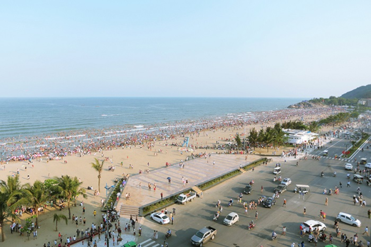

Bãi Biển Sầm Sơn, nghỉ mát nổi tiếng từ xưa đến nay, là niềm tự hào của người dân Thanh Hóa, đến Sầm Sơn, bạn sẽ tận hưởng những giây phú nghỉ nghơi tuyệt vời. Nằm trên đường Hồ Xuân Hương dài khoảng 4km từ sát khu vực đền Độc Cước cho đến ranh giới FLC. Biển Sầm Sơn được chia thành 4 bãi là A, B, C, D. Riêng với các bãi A, B thường đông khách hơn vì nó nằm gần khu vực trung tâm. Với dòng nước biển trong xanh mát lành, những bãi cát trắng mịn trải dài dưới nắng, du khách đến du lịch biển Sầm Sơn sẽ được thả mình trong thế giới vô tận của thiên nhiên, lắng nghe tiếng sóng biển vỗ về, cảm nhận tiếng rì rào của những rặng cây phi lao trong gió. Và quả đúng như Le Breton, học giả người Pháp từng nhận xét: “Sầm Sơn là bãi tắm tốt nhất để phục hồi sức khỏe”.
Sầm Sơn được biết đến là một hình thức du lịch biển nên sẽ phù hợp với những chuyến du lịch vào lúc trời nắng đẹp. Đặc biệt từ tháng 5 đến tháng 8 là thời gian Sầm Sơn đón rất nhiều lượt khách du lịch ghé thăm. Bạn nên tránh các đợt mưa bão, bởi lẽ khí hậu Sầm Sơn phân chia rõ rệt theo mùa, có những mùa khí hậu đẹp, mát mẻ, rất phù hợp để tham qua những địa điểm vui chơi. Còn những ngày mùa mưa, vì là thành phố sát biển nên Sầm Sơn cũng chịu khá nhiều những cơn gió lớn. Do đó, bạn nên tham khảo dự báo thời tiết trước khi đi để đảm bảo an toàn và có chuyến đi chơi vui, không bị thời tiết cản trở bạn nhé!
Đến với biển Sầm Sơn có thể gọi là thiên đường hải sản. Bạn có thể mua hải sản tại bãi biển mỗi khi các đoàn thuyền đánh cá về bờ.
Những lưu ý khi đi du lịch Sầm Sơn:
Một điều tuyệt vời khi đến các bãi biển Sầm Sơn chính là bạn có thể bắt gặp các hub của FLC dựng lên. Bạn có thể nghỉ chân tại đây mà không tốn phí nhé!
Hỏi giá các dịch vụ trước khi sử dụng. Nếu bạn lần đầu đến Sầm Sơn thì nên tham khảo giá của các dịch vụ trước khi sử dụng để tránh mất tiền oan mạng nhé!
Nguồn: Sưu tầm